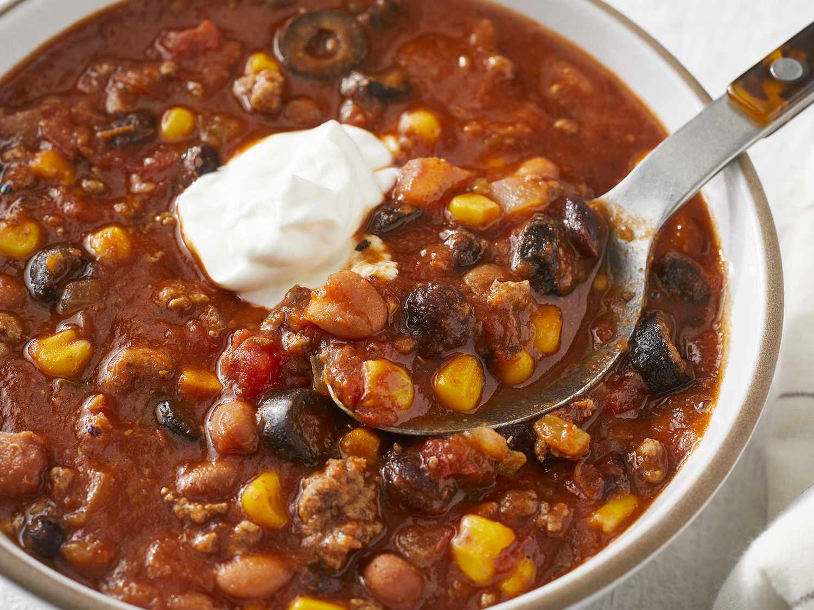

Taco Soup

This was always my comfort food during the winter season, and now it has turned into a staple that I make for my household every couple weeks or so! The hubby LOVES this one.
Lasts for multiple dinners for a family of 2-3. Good refrigerated for up to a week.
Ingredients
- 2 lbs ground beef
- 1 large can of tomato sauce
- 1 small can of tomato sauce
- 1 can of corn
- 1 can of black beans
- 2 cans of chili beans
- Pkg of taco seasoning mix
- 1/2 diced green bell pepper (optional)
- Shredded cheese of your choosing (topping)
- Sour cream (topping)
Steps
- Cook and drain ground beef when it turns brown
- Drain corn and bean cans
- Throw all ingredients in a big pot
- Stir and cook until boiling
- (Optional) Mix in diced green bell pepper
- Serve and sprinkle cheese and sour cream into the bowl